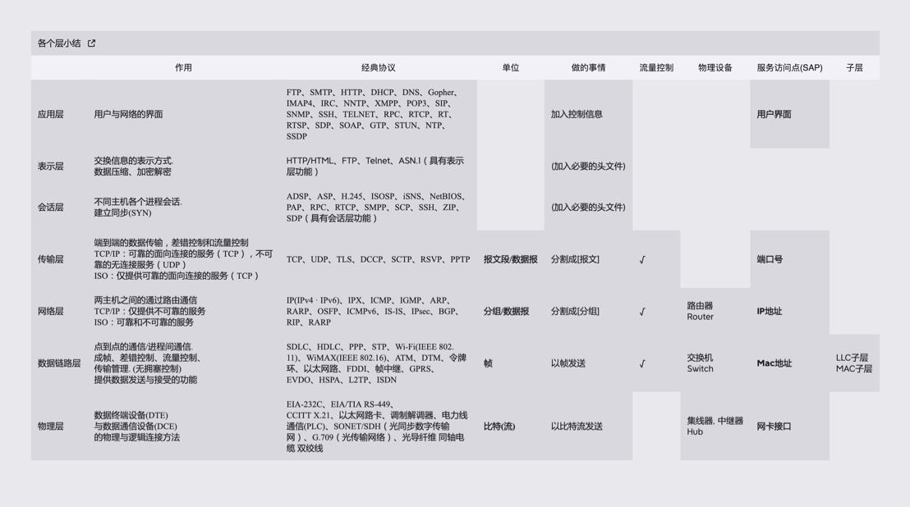
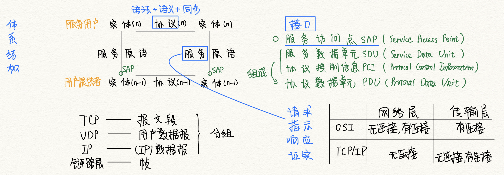

2022.07.09
计算机网络体系结构体系结构总结物理媒介物理层（Physical Layer）数据链路层（Data Link layer）网络层（Network Layer）传输层（Transport Layer）会话层（Session Layer）表示层（Presentation Layer）应用层（Application Layer）知识点小结

传输信息所利用的一些物理媒体,如双绞线、光缆、无线信道等,并不在物理层协议之内而在物理层协议下面。因此,有人把物理媒体当作第0层。
FTP、SMTP、HTTP...

OSI与TCP-IP模型异同妙记：
OSI希望把什么都做好，在网络层的时候就做了有连接与无连接的功能，所以传输层就只做有连接的了。因为有无连接的区分已经在底层做好了。
TCP/IP在网络层只有IP，有无连接的功能都在传输层去做。